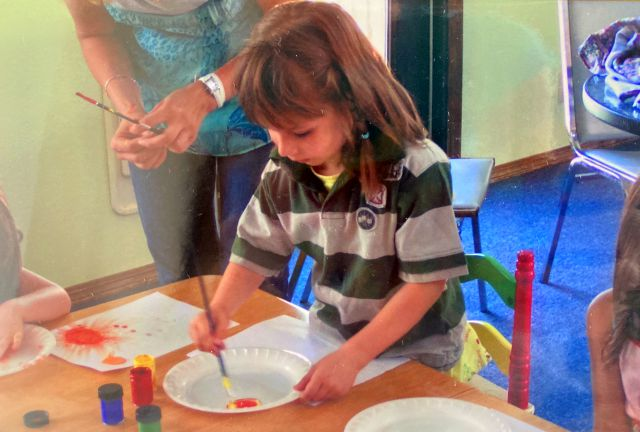

The meaning of literacy
01.29.2021 at 8:48
When most people hear the word "literacy"...
they usually imagine a lost generation writer, smoking a cigar, sitting in an expensive chair and mumbling something about grammar and traditional ideals. They certainly don't think about a girl they knew in third grade, and they certainly don't think about Renglish.

A core value of mine,
through most of my childhood, was competition. It’s one of those traits that gets instilled in you at a very young age - before your memory kicks in - so I can’t quite place why I was like that for such a long time. I’ve rationalized it plenty - maybe it’s because my parents are very educated and have always held me to a high standard. Maybe, it’s because I’ve been consistently rewarded for knowing more than my peers by teachers and distant relatives. Or maybe, it’s because of a singular event that I've forgotten by now. No matter the reason, my competitiveness has given me some of my ugliest features. Ugliest of all, perhaps, is that I used to laugh at other people, at what I assumed were deficiencies.
I would laugh when people made mistakes, when they failed on their first attempt, when they didn’t understand things immediately after having everything explained.
"I would laugh when people made mistakes, when they failed on their first attempt, when they didn’t understand things immediately after having everything explained."
But, what I thought was most hilarious, what to me was a culmination of all failures, and would never fail to bring me to hysterics, is Renglish.
For those not in the Russian community, Renglish is exactly what it sounds like: Russian, but with so many anglicisms that it becomes a sort of franken-language, with borrowed elements from both Russian and English. Thus, Renglish. Since Renglish is mostly spoken by less educated Ukranian immigrants, I saw it's speakers as a sort of subpar version of myself. We were similar enough- we spoke the same languages, and our families had come from a relatively similar region. But, to me, knowing that the real Russian word for “turkey” is “indyushka” and not “turka”, or that “traffic” is “probka” and not “treffik”, somehow made me superior. It didn’t make any difference that many Renglish speakers were some of my closest friends- I would laugh all the same.
If you'd asked me then what literacy was, I would probably conjure up the same image as most people - the old writer in his old double-breasted vest. This jaded definition was a reflection of what I'd been told all my life. It was only when I learned to make my own decisions that I was able to cast the old man from my head and replace him with someone new.

I remember specifically a time when I was about 10 years old. A girl, a Renglish speaker, was struggling to answer a question in Russian. The room was silent as she selected her syllables, clicking her tongue against the inside of her mouth. She sounded like a slide projector. And I laughed, very uglily, with spit spraying out of my ugly puckered lips as I doubled over, hideously. Something happened then, that had never happened before. She stopped and asked me, in English, “why are you laughing?”. I made up some lie about remembering something funny, because I was intimidated, and I knew inherently that what I was doing was wrong.
I wish I could say that that moment inspired me to stop laughing at other people, and that was the moment I learned a thing or two about humility, but that wouldn’t be true. In fact, I’m pretty sure I kept laughing at people, even after that had happened. I can’t pinpoint what it was that made me stop laughing at people, just as I can’t remember why I started doing it in the first place. I can rationalize it- maybe I knew it was wrong all along, and maybe that made it less and less funny until it wasn’t funny at all. Maybe, somebody told me it was wrong, somebody who’s opinion meant a lot to me. Or maybe, it was that singular event with the girl- after all I’ve held onto it after all these years.
"That’s the value of literacy- to communicate with as many people as possible in the language that they are most comfortable with."
Now, in retrospect, I can examine the event, and how it reflects my personality and values. Then, I would have called myself a very literate person, because, I suppose, by my admittedly unverified standards of literacy, I was. Now, I realize that I wasn’t literate at all. Literacy is entirely about communication. A good example of this is Amy Tan’s conclusion of her essay, “Mother Tongue”, where she includes a detail about the value of her mother’s verdict of her book, compared to a critic’s verdict of her book. Her mother’s opinion has more value, because that’s who she’s writing for. That’s the value of literacy- to communicate with as many people as possible in the language that they are most comfortable with. That girl, back then, was 10 times more literate than me, because she knew which words to answer the teacher with, she knew which words to talk to her friends with, and she knew which words she needed to use to tell me off. And all I knew was how to laugh.
| Author: Marina Wooden |